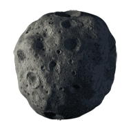
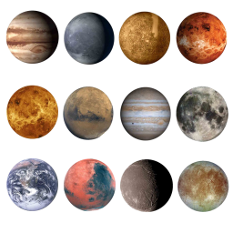

,
,
,
- to move.
"Esc" - to pause the game.
"Spacebar" - to start the game.
"A/S" - ON/OFF Music.
Avoid collisions with  asteroids and collect  planets to gain score.
Chapter I: A Storm of Asteroids
Chapter II: Show Your Secrets
You have overcome the asteroids field. Now you are entering a graviti field of "Goliaf". "Goliaf", or GGS-08S89, is a black hole that absorbs solar system NE017. One of the lasts planets in NE017 was colonized by humans scientists 30 Earth-years ago to study black holes. In 10 minutes you will land planet "David". Your mission is to explore colony and find out who has send encrypted message. You should be fast, in 48 hours "David" will reach event horizont and after that you could not leave planet anymore.
Hi, my dear Friend! Because of lower financing development of this game is going weeeeeery slooooow. Hope soon we will solve this issue. Best Wishes and Happy New Year!